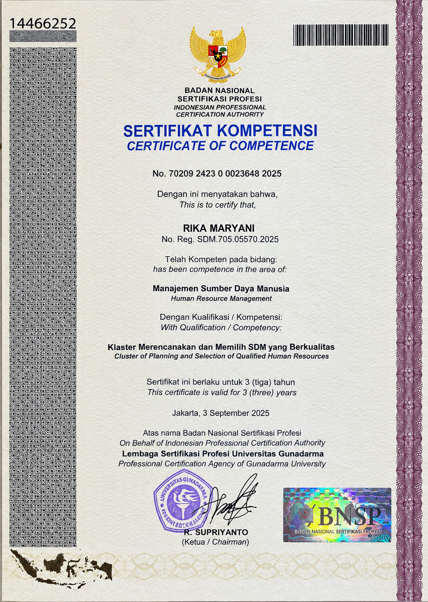

Hey There! I'm
RIKA MARYANI
About Me
Psychology graduate with hands-on experience in Human Resources, including Talent Acquisition, HR Administration, and Psychological Assessment. Experienced in recruitment, employee administration, payroll support, training and development, and onboarding. Passionate about HR Generalist, Talent Acquisition, and People Development, with strong communication, analytical, and interpersonal skills.
Core Competencies
- End-to-End Recruitment
- HR Administration
- Employee Onboarding & Offboarding
- Psychological Assessment
Professional Experience
My career path and professional contributions in the field of Human Resources.
HR Generalist
PT. Hania Natura IndonesiaSupported end-to-end recruitment, including sourcing, CV screening, interviews, and onboarding. Managed employee administration, documentation, and personnel records. Assisted payroll and compensation administration, including attendance and employee data management. Supported employee training and development activities, including preparation and coordination. Maintained HR databases and updated employee records to ensure data accuracy. Prepared HR reports and supported daily HR administrative processes. Coordinated with employees and relevant departments on HR-related matters.
Recruitment Staff
PT. Swakarya Insan MandiriConducted end-to-end recruitment, from sourcing to candidate onboarding. Processed offer letters and employment contracts using the company's internal HRIS (ORS). Prepared recruitment coversheets summarizing interview and assessment results. Coordinated candidate assessments, including Microsoft Excel, typing, and English tests. Maintained recruitment records and candidate documentation. Supported onboarding and pre-employment administrative processes.
Talent Acquisition Internship
PT. Gadai MAS NusantaraConducted end-to-end recruitment, from sourcing to onboarding. Screened 500+ CVs and shortlisted qualified candidates. Published job vacancies on multiple recruitment platforms. Coordinated interviews with hiring managers and candidates. Conducted psychological assessments and competency-based interviews. Managed candidate databases, recruitment records, and hiring dashboards using Google Sheets. Prepared offer letters, employment contracts, and onboarding documents.
Human Resources Internship
DivijaSupported recruitment activities, including CV screening and interview coordination. Reviewed candidate applications and shortlisted qualified candidates. Conducted initial HR interviews and candidate assessments. Assisted in employee performance evaluations and KPI monitoring. Maintained recruitment records and HR documentation. Prepared recruitment reports and supported HR administrative tasks.
Assistant Coordinator of Psychology Laboratory
Pyschology Laboratory Gunadarma UniversityCoordinated laboratory operations and cross-functional activities. Coordinated the recruitment and selection process for laboratory assistant positions. Led and supervised a team of 18 laboratory assistants. Screened 150+ CVs and assisted lecturers in candidate interviews. Mentored 200+ students during psychology laboratory practicums. Assisted psychologists in scoring psychological assessments.
Assistant Secretary of Psychology Laboratory
Pyschology Laboratory Gunadarma UniversityAs secretary, I responsible to make all documents such as administration letters, permission letters, and other kinds of letters that might need. Prepared practical tools and visual aids to enhance the coaching session. Supervised, evaluated and led laboratory operations for 18 staff, ensuring smooth workflow and productivity. Mentoring and managing data entry for 200+ students. Screened 150+ CVs and conducted initial recruitment to shortlist qualified candidates. Used problem-solving and analytical skills to verify causes of failures to revamp models and eliminate non-functioning methods. Involved in the recruitment, selection, and placement process, aligning with organizational needs.
Skills & Expertise
Core competencies and supporting work tools in Human Resources management.
Core HR Competencies
Operations & People Dev
Tools
Certifications & Licenses
Professional certification and training in the field of Human Resources.

Human Resources Management
Issued: September 2025

End-to-End Talent Acquisition Mastery
Issued: Jun 2026

Psychological Assessment & Testing
Issued: Jan 2026
Let's Work Together
I am always open to discussions and collaboration regarding career opportunities in the field of Human Resources.